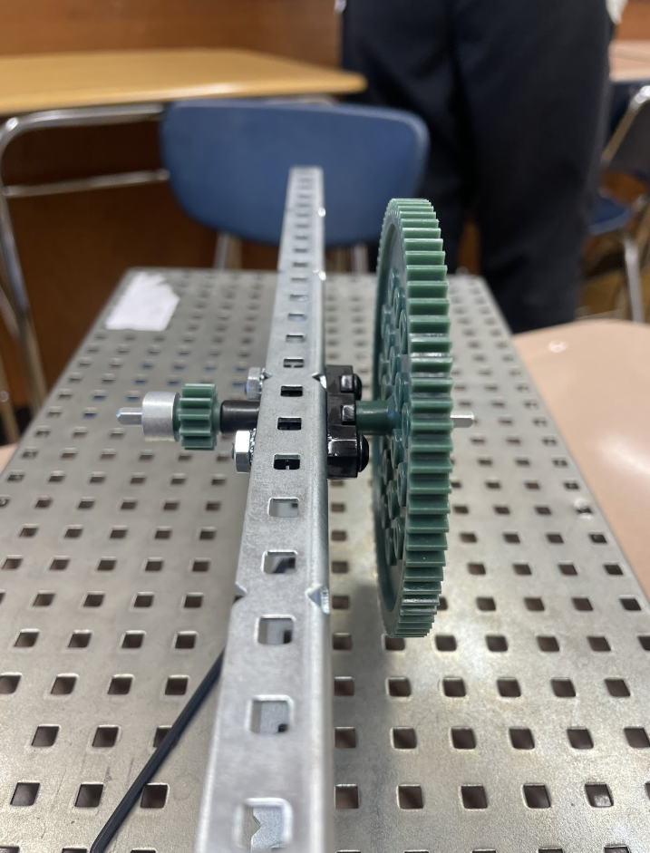
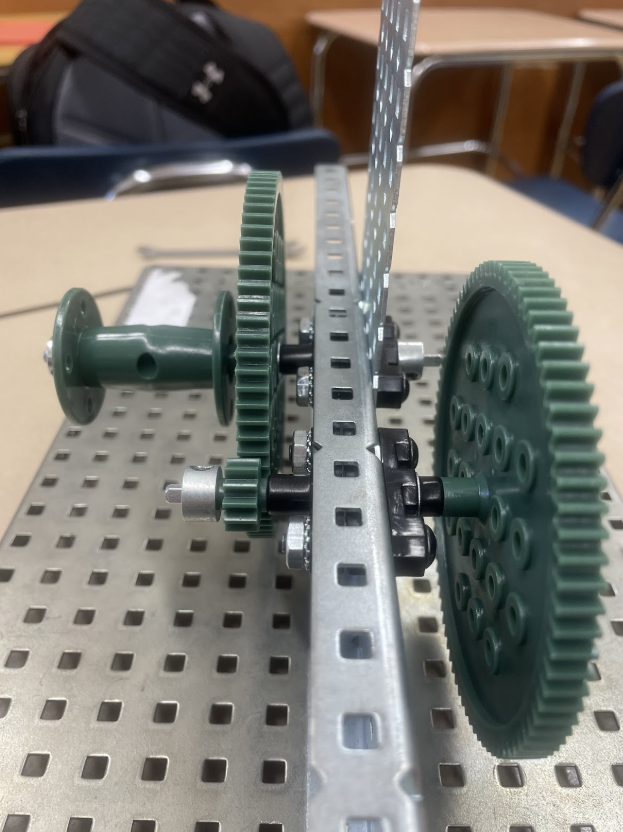
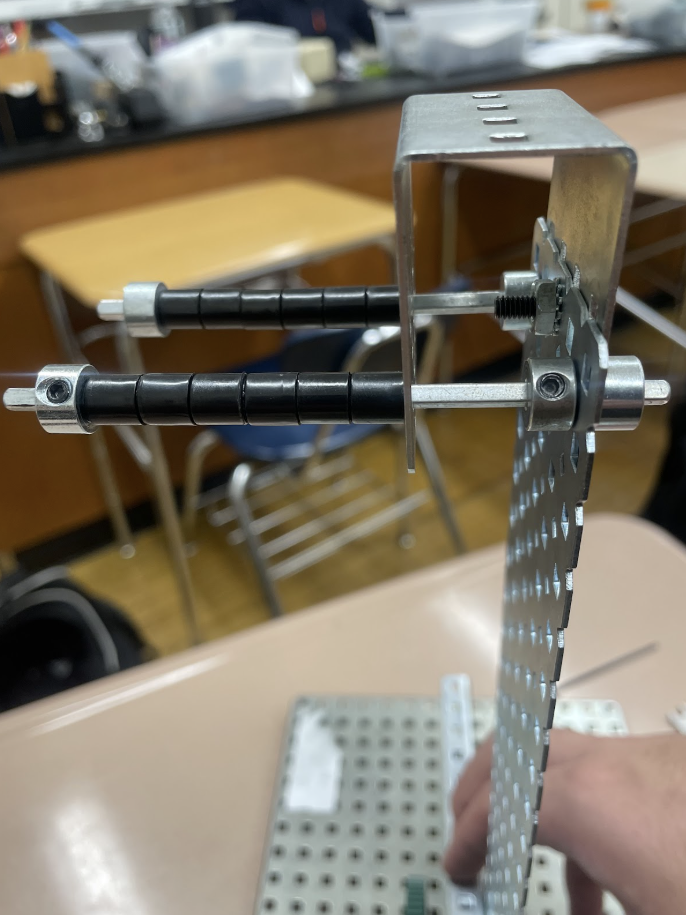
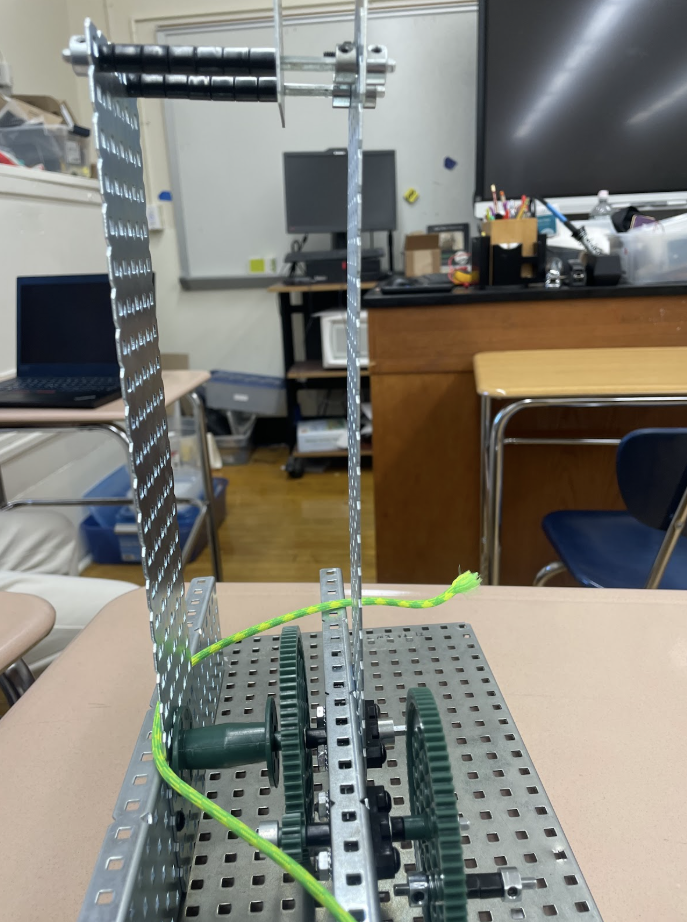
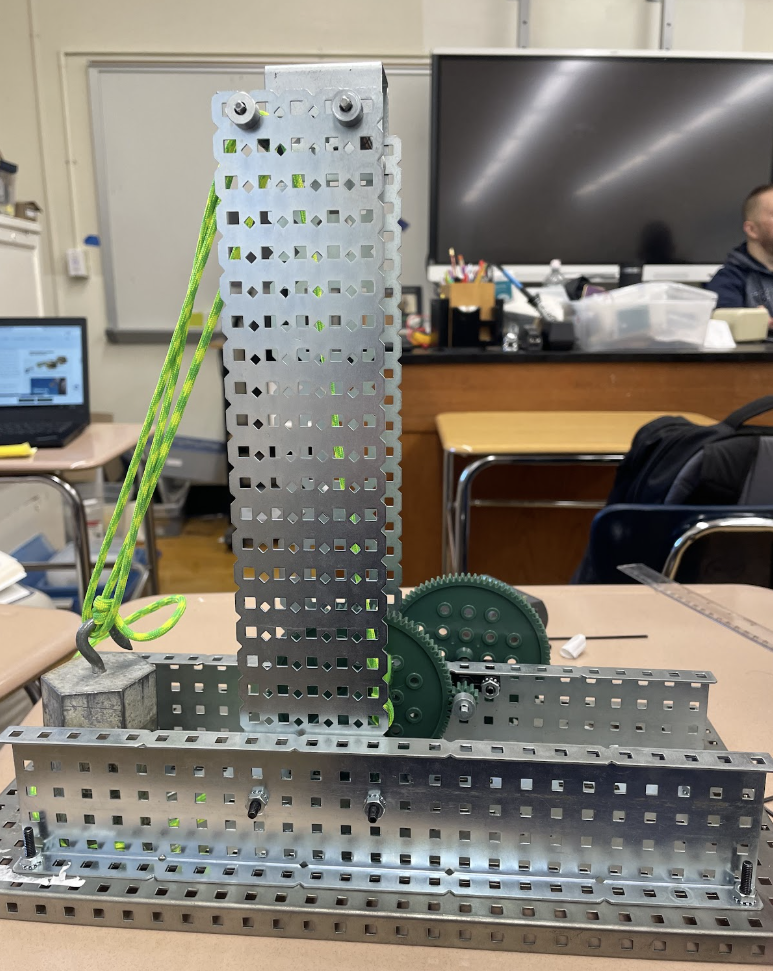
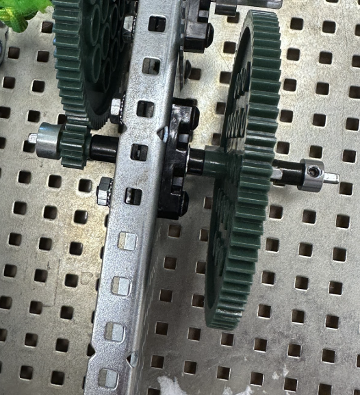
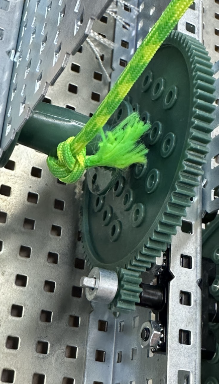
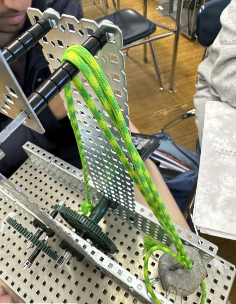
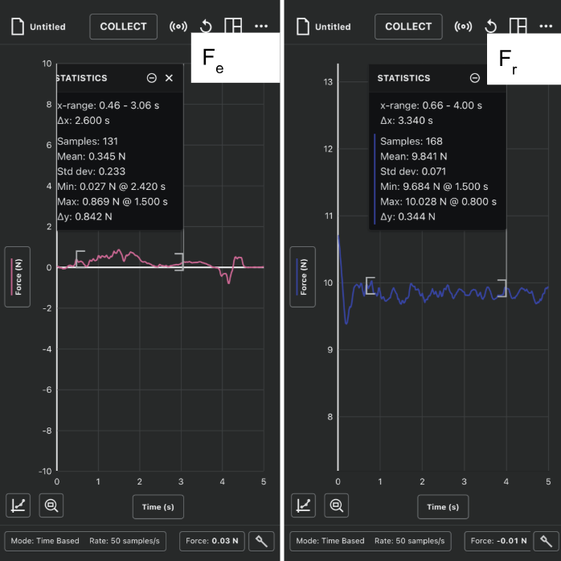

Project Overview
This project is about creating a compound machine that can perform work on an object. The goal is to understand the principles of simple machines and how they can be combined to create complex systems with a different form of movement and a larger mechanical advantage.
This project is a group project for Bayside High School's Principles of Engineering course consisting of me, Bilal Tariq, Noah Iseman, and Osric Rodriguez.
In our model, we created a compound machine that converts a rotational motion into a vertical translational motion to lift a weight with a high mechanical advantage, similarly to a portcullis. Our initial plan is to increase the mechanical advantage by utilizing simple machines, then connect to a pulley to lift the weight.
Design & Development Process
We started by building the base, which is two C-Channels attached perpendicular to each other. Then, on a shaft placed on the base, we attached a 84-teeth gear to on one side of an axle, being the handle, and a 12-teeth gear on the other side to create a wheel and axle.

Base of the compound machine
We then attached a second axle with a 84-teeth gear into the 12-teeth gear for a larger gear ratio, and a pulley with a 1:6 diameter ratio with the 84-teeth gear to create a pulley. We also attached a plate to the base to hold the top of the pulley in place.

Pulley added to the base of the compound machine
At the top of the compound machine, we attached two shafts with spaces to act as a space for the rope on the pulley to rest on. We also added a gearbox bracket to increase in an attempt to strengthen the stability of the top.

Top of the compound machine
However, the top was still too unstable, so we added a support to the side of the system using a new C-Channel and base to solve the problem with the structural integrity.

A support was added to the system to improve its stability under tension
Finally, to complete the machine, we attached a rope to the pulley and added a weight on the rope. We also created a handle out of a shaft and spacers for a more "realistic" machine.

Final design of the compound machine
Analysis
We first calculated our ideal mechanical advantage from all of our simple machines in our system. The diameter of the handle's motion is 2.5 cm, and the diameter of the small axle is 0.5 cm, which gives a mechanical advantage 5 for the handle.

The IMA of the wheel & axle on the handle calculated to equal 5
The next machine is the gear train, in which the small gear has 12 teeth, and the large gear has 84 teeth. Therefore, the gear ratio will be 7. Additionally, the diameter of the large gear is 3.5 cm, and the diameter of the pulley is 0.5 cm, which gives another mechanical advantage of 7.

The gear ratio of the gear train is 7, and the mechanical advantage of the second wheel and axle is 7
Finally, the pulley has 3 ropes on it, which gives a mechanical advantage of 3. This gives us a whopping total ideal mechanical advantage of 105.

The mechanical advantage of the pulley is 3 since there are 3 ropes
However, when we measured the resistance and effort forces of the compound machine, we found the actual mechanical advantage to be significantly lower, giving us a total effiency of merely 27%. This is likely due to measure error, as our effort forces had a large standard deviation for the measured values, which is likely to cause a large error when calculating the mechanical advantage. Additionally, there is likely a large loss of energy to friction, as there are large numbers of movements needed to perform the task.

The measured force values of the compound machines
Conclusion
Our compound machine project successfully demonstrated the principles of mechanical advantage through the combination of simple machines. We learned how to create various simple machines and how to calculate the mechanical advantage of a system. We also realized real-world limitations to many complex systems similar to the one in this project that can cause a decrease in efficiency of the system.